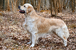
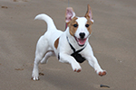
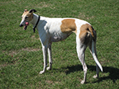

A dog breed is a particular strain of dog that was purposefully
bred by humans to perform specific tasks, such as herding,
hunting, and guarding. Dogs are the most variable mammal on earth,
with artificial selection producing around 450 globally recognized
breeds. These breeds possess distinct traits related to
morphology, which include body size, skull shape, tail phenotype,
fur type, and coat colour. Their behavioural traits include
guarding, herding, and hunting, and personality traits such as
hypersocial behavior, boldness, and aggression. Most breeds were
derived from small numbers of founders within the last 200 years.
As a result, today dogs are the most abundant carnivore species
and are dispersed around the world.

A dog breed will consistently produce the desirable physical
traits, movement and temperament that were developed over decades
of selective breeding. For each breed they recognize, kennel clubs
and breed registries usually maintain and publish a breed standard
which is a written description of the ideal specimen of the breed.
Other uses of the term breed when referring to dogs include pure
breeds, cross-breeds, mixed breeds and natural breeds.

Prior to the standardisation of dog breeds, there were different
types of dogs that were defined by their function. Many different
terms were used to describe dogs, such as breed, strain, type,
kind, and variety. By the end of the Victorian era, society had
changed and so did the role of dogs. Form was given a more
prominent role than function. Different types or breeds of dog
were being developed by breeders who wanted to define specific
characteristics and desirable features in their dogs. Driven by
dog shows and the groups that hosted them, the term dog breed took
on an entirely new meaning. Dog show competitions included
best-in-breed winners, and the purebreds were winning. Breed
standards are the reason the breed came to be, and with those
standards are key features, including form, function and fitness
for purpose. The Kennel Club in the UK was founded in 1873, and
was the world's first national kennel club and breed registry. The
International Canine Federation was founded in 1911 as a worldwide
organisation. Its objective is to bring global uniformity to the
breeding, exhibiting and judging of pure-bred dogs. It now has 99
members countries.